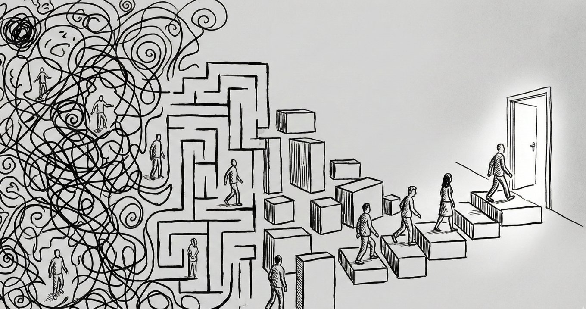

その「謎のケーブル」、何に繋がっているんですか？

どーも、とーるです！
いきなりですが、あなたの家の引き出しの奥に、「何の家電に使うか分からなくなった、謎の黒いケーブル」って眠ってませんか？
家の引き出しにある「あの黒い紐」の話
先日出てきましたよ、家から。
「形状からしてPCか？でもアンペア違うしな？」
で、結局また引き出しに戻っていっちゃいました笑。
捨てようにも「もし大事なやつだったら困るし……」と思って、結局また引き出しに戻す。
でも、絶対に二度と使いません笑。
なぜなら、そのケーブルは「本体（親）」を失った、ただの黒い紐だからです。
実は、今のSNS界隈を見渡すと、これと同じものを大量に見かけます。
あなたのその投稿、あなたのそのノウハウ。
「本体（解決策）のない、行き止まりのケーブル」になっていませんか？
コンテンツの親子関係
ビジネスの導線を整理するために、「チャンク」という概念を理解しておきましょう。
「チャンク」とは情報の「塊」の大きさのこと。
売れる導線は、必ずこのトーナメント図のような「親子関係」でできています。
【大チャンク（親）】：あなたのメインコンセプト、高単価商品
例：「人生最後のダイエット講座（3ヶ月集中プログラム）」
【中チャンク（子）】：解決策の柱、リードマグネット（オプトイン）
例：「代謝リセット食事法」「無理のない習慣化ステップ」
【小チャンク（孫）】：日々のSNS発信、豆知識、TIPS
例：「コンビニで買える痩せ飯」「3分スクワット」
多くの人が、この「チャンク」をバラバラに、あるいは逆順に発信しています。
でも、ユーザーの感情は「小 → 中 → 大」という順番でしか温まりません。
ユーザーの感情をコントロールする
イメージしやすいように、ダイエット講座を例に「相手の感情がどう変化していくか」を追ってみましょう。
① 小チャンク（SNS投稿）：感情は「驚き」と「即時解決」
内容：「夜22時以降に食べても太らない！魔法のコンビニおにぎり3選」
相手の感情：「え、マジで！？」「これなら今すぐセブンで買えるわ！」「ちょっと得した気分（自己肯定感の向上）」
狙い：ここで本質（体質改善）を語ってもスルーされます。まずは「即効性・簡単・気軽」なネタで、あなたという存在を「自分の悩みを一瞬で解決してくれる人」として脳に記憶させることです。
② 中チャンク（公式LINE/メルマガ）：感情は「納得」と「希望」
内容：「なぜ、コンビニ飯を選んでも痩せない人がいるのか？ その裏に隠れた『代謝のバグ』の正体」
相手の感情：「あ、やっぱり単発の知識だけじゃダメなんだ」「私の今までの失敗は『バグ』のせいだったのか！」「この人の言う通りに整えれば、私も変われるかも（希望）」
狙い：小チャンクで集まった「点」の知識を繋ぎ合わせ、「文脈（ストーリー）」を提示していきます。ここで初めて「なぜ、あなたの講座が必要なのか」という理由が、相手の心に芽生えます。
③ 大チャンク（商品・講座）：感情は「確信」と「決意」
内容：「3ヶ月で代謝バグを根治し、一生リバウンドしない体を作るプログラム」
相手の感情：「これこそが私が探していたものだ」「他の誰でもなく、この人にお願いしたい」「今、人生を変える決断をしよう」
狙い：最後に「全てのパズルが完成するピース」を提示します。
この「小（快楽）→ 中（教育）→ 大（救済）」という感情のフローができていないから、多くの投稿は「謎のケーブル」として引き出しにしまわれてしまうんです。
わかりやすく言えば「感情が止まりやすい」ってことです。
小チャンクは「顕在ニーズ」に全振りしろ
日々のSNSで出す「小チャンク」において、最もやってはいけないこと。
それは「潜在的な課題（あなたが本当に伝えたい本質）」を語ることです。
「ダイエットにおいて最も大事なのは、己の深層心理と向き合うことです！！」なんて小チャンクを出しても、3秒でスクロールされます。
ユーザーが求めているのは「救済」ではなく「今すぐ効く痛み止め」です。
小チャンクでは、次の3つの要素を徹底してみてください。
- 即効性：今すぐ試せる。
- 簡単に：脳を使わずにできる。
- 気軽に：3秒でメリットが理解できる。
顕在化している「今すぐどうにかしたい！」という欲求に対して、ニッチな解決策をズバッと提示する。
本質的な話やマインドの話は、もっと深い関係（中・大チャンク）になってから聞かせればいいんです。
もちろん最初から合理的なユーザーもいます。
「最初は基礎から！」「答えより解き方を知りたい！」そんな人は「SNSで学ぶ」ではなく、もうすでに本屋とか行って勉強していたり学ぶ専門プラットフォームであるUdemyなんかで、専門家から講座購入して学んでいます。
チャンクダウンは「フロント商品開発」の設計図
実は、この「小チャンク＝ニッチ」という考え方は、フロント商品（安価な入り口商品※集客商品）の開発において最強の武器になります。
小チャンクに行けば行くほど、内容は具体的になり、対象は絞られます。
大：ダイエット
中：産後ダイエット
小：「産後、どうしても甘いものが止まらない人のための、脳を騙すヘルシースイーツ10選」
この「小」の部分、そのままKindle本や1,000円〜3,000円程度のフロント商品になります。
小チャンクは、集客の窓口であると同時に、最強の「売れる入り口商品」の種でもあるんです。
ニッチであればあるほど、「あ、これ私のことだ！」という自分事化が起き、成約率は跳ね上がります。
認知のパラドックス
なぜ、ここまで「小出しのニッチ戦略」が大事なのか。
それは、マーケティングの歴史が「認知が広まれば戦略が死ぬ」ことを証明しているから。
これは別コラムで解説しましたね。
➔ #53：【保存版】出していいノウハウ・ダメなノウハウの「完全分類マップ」
かつての「タピオカブーム」を思い出してください。
初期は「タピオカ？ なにそれ？」という小チャンクだけで爆売れしました。
ですが、ブームが一般ユーザーの最下層まで広まりきった後、「タピオカあります！」という看板を出しても誰も来なくなりました。
マーケティング手法も同じです。
ブログ時代からSNS時代まで、かつて「最強」と言われた手法は、広まりきった瞬間に「説得知識モデル（心理学用語）」によってユーザーに免疫を持たれ、陳腐化してきました。
後から参入した人が「あの人が言った通りにやったのに売れない！ 嘘つきだ！」と言うのは、単にその手法の寿命（認知の広まり）が尽きたから。
だからこそ、僕たちは常に「小チャンク（新しい切り口の窓口）」を出し続け、そこから自分だけの「中・大チャンク」へ引き込む導線が必要不可欠になります。
コンセントの先を確認すること
うまくいかない原因を「時期」や「運勢」のせいにしてはいけません。
スピリチュアルな「流れ」に身を任せて改善を放棄する前に、まずは自分のコンテンツの「接続」を確認してください。
あなたの今日の投稿は、即効性があって、簡単で、気軽な「ニッチな小チャンク」になっていますか？
そしてその投稿を読んだ後、相手の感情は「もっと知りたい（中チャンクへ）」と動いていますか？
毎回じゃなくていいです。毎回だとより「説得知識」が発動してしまいます。
「部分（小）」で目を引き、「具体（ニッチ）」で刺し、「全体（大）」で救う。
引き出しの中の「謎のケーブル」を整理しましょう。
その感情の設計図こそが、このSNSで溺れずに、選ばれ続けるための唯一の戦略です。
とーる｜猫好きの行動経済アナリスト